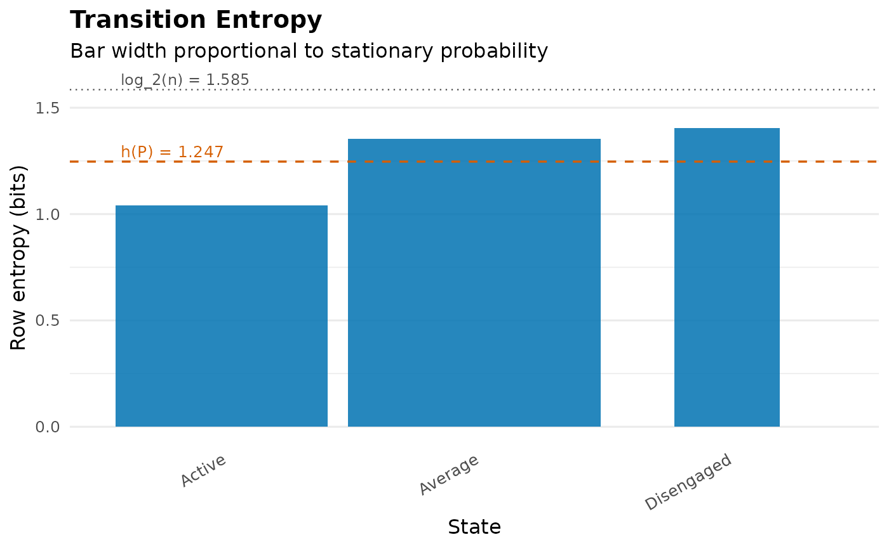

Computes per-state branching entropy, stationary entropy, and the chain-level entropy rate of a Markov transition process. The entropy rate is the Shannon-McMillan-Breiman per-step uncertainty of trajectories under the stationary distribution; it is the canonical information-theoretic summary of a transition matrix.
Arguments
- x
A
netobject,cograph_network,tnaobject, row-stochastic numeric transition matrix, or a wide sequence data.frame (rows = actors, columns = time-steps; a relative transition network is built automatically). Group dispatch onnetobject_group.- base
Numeric. Logarithm base.
2(default) for bits,exp(1)for nats,10for hartleys.- normalize
Logical. If
TRUE(default), rows that do not sum to 1 are normalised automatically (with a warning).- object
A
net_transition_entropyobject (forsummary).- ...
Ignored.
Value
An object of class "net_transition_entropy" with:
- row_entropy
Named numeric vector, length \(n\). Per-state branching entropy \(H(P_{i\cdot}) = -\sum_j P_{ij} \log P_{ij}\).
- stationary
Named numeric vector. Stationary distribution \(\pi\).
- stationary_entropy
Scalar. \(H(\pi) = -\sum_i \pi_i \log \pi_i\) - the entropy of \(\pi\) treated as an i.i.d. distribution. Upper bound on the entropy rate.
- entropy_rate
Scalar. \(h(P) = \sum_i \pi_i H(P_{i\cdot})\) - the Shannon-McMillan-Breiman entropy rate.
- redundancy
Scalar. \(H(\pi) - h(P)\), the entropy deficit attributable to serial dependence; zero for an i.i.d. chain (rows of \(P\) all equal \(\pi\)).
- base
Logarithm base used.
- states
Character vector of state names.
Details
Convention \(0 \log 0 := 0\) is applied, so absorbing or
deterministic rows contribute zero per-row entropy. The chain need not be
irreducible; \(\pi\) is computed from the eigendecomposition of
\(P^\top\) as elsewhere in the package. For non-ergodic chains the
returned \(\pi\) is one stationary distribution among many - interpret
with the help of chain_structure.
The relation \(h(P) \leq H(\pi)\) holds with equality iff successive
states are independent. The deficit \(H(\pi) - h(P)\) is reported as
redundancy - a measure of how much memory the chain has at order 1.
References
Cover, T.M. & Thomas, J.A. (2006). Elements of Information Theory, 2nd ed., chapter 4. Wiley.
Shannon, C.E. (1948). A mathematical theory of communication. Bell System Technical Journal, 27, 379-423.
Examples
# \donttest{
net <- build_network(as.data.frame(trajectories), method = "relative")
te <- transition_entropy(net)
print(te)
#> Transition Entropy (3 states, bits; ceiling = 1.585)
#>
#> raw normalised
#> Entropy rate h(P) = 1.247 bits 0.787
#> Stationary H(pi) = 1.501 bits 0.947
#> Redundancy H(pi)-h = 0.255 bits 0.170
#>
#> Normalised: raw / log_2(n_states); 0 = deterministic, 1 = uniform.
summary(te)
#> Transition Entropy Summary (bits)
#>
#> Per-state contribution to h(P):
#> state stationary row_entropy row_entropy_norm contribution
#> Average 0.443 1.354 0.855 0.600
#> Active 0.372 1.040 0.656 0.387
#> Disengaged 0.185 1.403 0.885 0.260
#> contribution_pct
#> 48.1
#> 31.0
#> 20.8
#>
#> Chain-level summary:
#> quantity raw normalised
#> entropy_rate h(P) 1.247 0.787
#> stationary H(pi) 1.501 0.947
#> redundancy H(pi)-h(P) 0.255 0.170
#> ceiling log_2(n) 1.585 1.000
#>
#> Normalised values are raw / log_2(n_states), in [0, 1].
plot(te)

# }